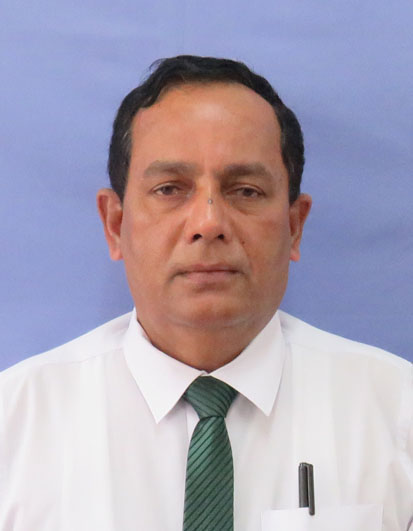
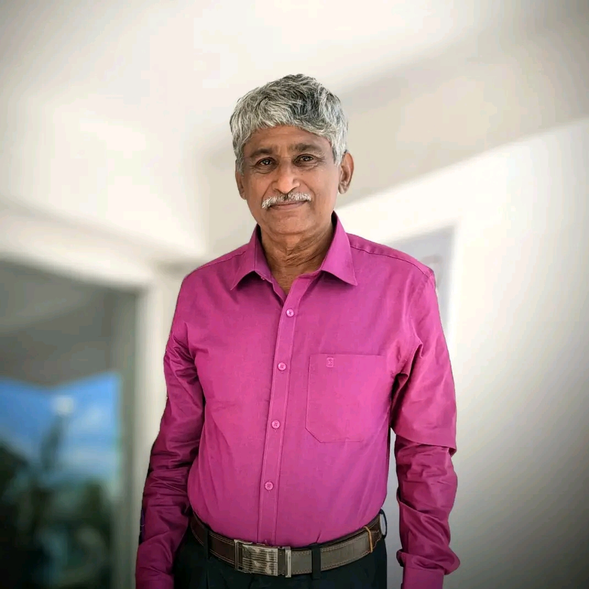

Establishment of the School
Following the decline of the Anuradhapura Kingdom, the education of children in the Nuwarakalaviya region was revitalized with the founding of the Medawachchiya Sinhalese School in July 1922. Established under the leadership of the local Korale and Headmaster Mr. A. Appuhami, the school began as a simple mud-walled shack. Despite challenges like the malaria epidemic and extreme weather, the school grew steadily, transitioning from a boys-only school to a mixed school in March 1924.
The school moved to a permanent building in 1929, marking a new era of formal education. By 1930, English language teaching was introduced, and by 1947, the school opened its doors to Tamil medium students, fostering communal harmony. The 1950s and 60s saw rapid expansion with the establishment of a science laboratory, a scouting group, a cadet platoon, and a library. In 1967, the school reached a major milestone by starting Advanced Level classes, with its first batch of students entering university shortly after. The house system (Hansa, Mayura, and Paravi) and the official school flag were introduced in 1969.
Reflecting its excellence, the institution was upgraded to a Central College on April 30, 1987, and achieved National School status on June 12, 1996. On September 14, 1997, the college was officially renamed A/Maithripala Senanayake Central College in honor of the late veteran politician Hon. Maithripala Senanayake for his service to the region. Today, the college stands as a premier educational institution, boasting national-level achievements in both sports and performing arts, including winning first place in the All-Island State Drama Festival in 2000.
| Photograph | Name of the Principal | Service Period |
|---|---|---|
 |
Mr. Chanaka Devinda Karunasena | 2025 - Present |
 |
Mr. W.M.S.A. Wiesundara | 2023 - 2025 |
 |
Mr. Aryathilaka | 2015 - 2023 |